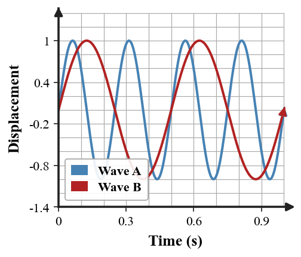
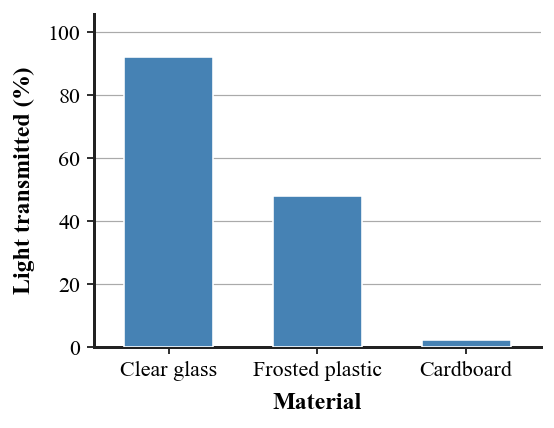
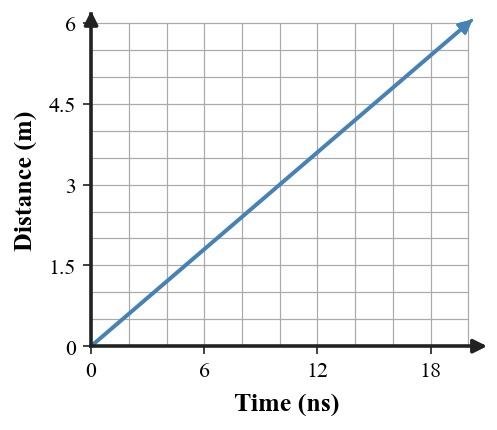
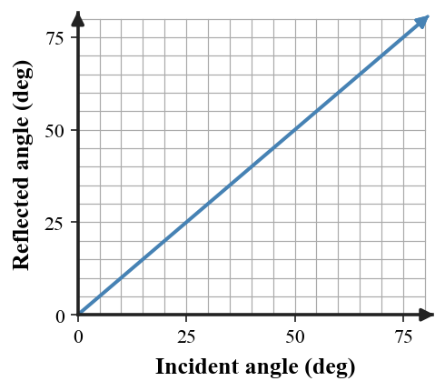
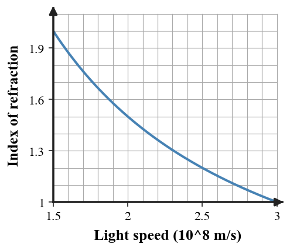
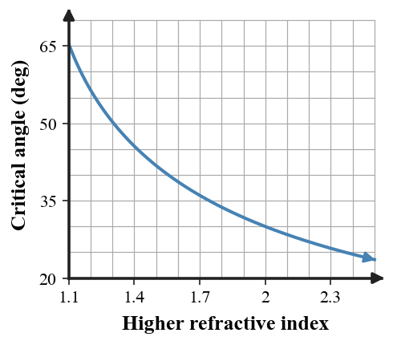
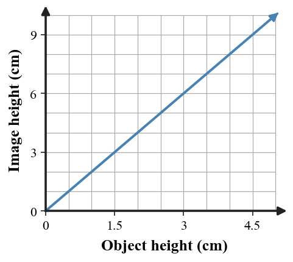

How can the statement 8 + 8 = 4 be true without changing any of the numbers or symbols?
Use $D=\frac{m}{V}$. A liquid occupies $35\,\text{mL}$ and has a density of $1.2\,\text{g/mL}$. Determine the liquid's mass.
Which term describes the material through which a mechanical wave travels?
A. Medium
B. Amplitude
C. Period
D. Resonance
Use $v=f\lambda$. A sound wave travels at $340\,\text{m/s}$ and has a frequency of $170\,\text{Hz}$. Determine its wavelength.
What has 88 keys but cannot open a single door?
Determine the base of a triangular sign using $A=\frac12 bh$. The sign has an area of $1.50\,\text{m}^2$ and a height of $1.20\,\text{m}$.

The graph shows two waves over the same one-second interval. Which wave has the greater frequency?
A. Wave A
B. Wave B
C. They have the same frequency
D. Frequency cannot be compared
Two tuning forks vibrate at $523\,\text{Hz}$ and $519\,\text{Hz}$. Use $f_{beat}=|f_1-f_2|$ to determine the beat frequency.
A baseball player leaves home, makes three left turns, and returns home. Two masked people are waiting there. Who are they?
A savings account earns $\$180$ in simple interest on a $\$1{,}500$ principal over 2 years. Use $I=Prt$ to determine the annual interest rate.
Which statement best describes resonance?
A. A wave bends when its speed changes
B. An object responds strongly when driven near its natural frequency
C. Sound reflects from a wall
D. Two close frequencies always have equal pitch
A hiker hears an echo $0.80\,\text{s}$ after shouting. Use $d=\frac{vt}{2}$ with $v=340\,\text{m/s}$ to determine the distance to the cliff.
Find the next number in the pattern:
1, 2, 4, 7, 11, 16, ____
A small motor draws $2.5\,\text{A}$ of current while using $30\,\text{W}$ of power. Determine the operating voltage using $P=IV$.

The graph compares how much light passes through three materials. Which material is best described as opaque?
A. Clear glass
B. Frosted plastic
C. Cardboard
D. All three are transparent
Use $c=f\lambda$ with $c=3.0\times10^8\,\text{m/s}$. Light has a frequency of $5.0\times10^{14}\,\text{Hz}$. Determine its wavelength.
What gets wetter the more it dries?
Determine the speed of a $6.0\,\text{kg}$ cart with $192\,\text{J}$ of kinetic energy. Use $KE=\frac12mv^2$.
Visible light is best described as:
A. One part of the electromagnetic spectrum
B. A mechanical wave that requires air
C. Matter moving from a source to the eye
D. A type of sound wave

The graph models light traveling through space, with time measured in nanoseconds. According to the graph, how far does light travel in $12\,\text{ns}$?
What familiar phrase is represented by the word below?
ECNALG
A rectangular sample is $8.0\,\text{cm}$ long, $5.0\,\text{cm}$ wide, and $2.0\,\text{cm}$ thick. Its mass is $240\,\text{g}$. Use $V=lwh$ and $D=\frac{m}{V}$ to determine its density.
A dark shadow forms mainly because:
A. Darkness travels away from the object
B. Light is blocked from reaching a region
C. Light speeds up behind the object
D. The object creates a second light source
Use $c=f\lambda$ and $c=3.0\times10^8\,\text{m/s}$. Green light has a wavelength of $5.0\times10^{-7}\,\text{m}$. Determine its frequency.
A man walks into a bar and asks for a glass of water. The bartender suddenly points a gun at him. The man says, “Thank you,” and leaves. Why?
A shipping crate weighs $360\,\text{N}$. Use $W=mg$ with $g=10\,\text{N/kg}$ to determine the crate's mass.

The graph shows reflected angle versus incident angle for a mirror. Which relationship does it represent?
A. $\theta_i=\theta_r$
B. $\theta_i+\theta_r=180^\circ$
C. $\theta_r=2\theta_i$
D. $\theta_r=0$ for every ray
A light ray strikes a mirror at an angle of incidence of $42^\circ$. Use $\theta_i=\theta_r$ to determine the angle of reflection.
In a race, you pass the runner who is in second place. What place are you in now?
During a collision test, a cart has momentum $54\,\text{kg}\cdot\text{m/s}$ while moving at $6.0\,\text{m/s}$. Use $p=mv$ to determine its mass.
In a reflection diagram, the normal line is:
A. Parallel to the mirror surface
B. Perpendicular to the surface at the point where the ray strikes
C. The same thing as the reflected ray
D. A line connecting the object to its image
A reflected ray makes a $63^\circ$ angle with the normal. Use the law of reflection to determine the incident angle.
What has one eye but cannot see?
A spring stretches $0.18\,\text{m}$ when pulled with $45\,\text{N}$. Determine the spring constant using $F=kx$.
A plane-mirror image that appears to be behind the mirror is best described as:
A. Real image
B. Virtual image
C. Opaque image
D. Refracted image
A student stands $1.8\,\text{m}$ in front of a plane mirror. In the standard plane-mirror model, how far behind the mirror does the image appear?
What letter comes next in this sequence?
M, T, W, T, F, S, S, ____
Use $C=\pi d$ with $\pi=3.14$. Determine the diameter of a circular table whose circumference is $9.42\,\text{m}$.

The graph shows how index of refraction changes with light speed. Which statement is supported?
A. Larger index means faster light
B. Larger index means slower light
C. Index is unrelated to speed
D. Every material has index 1
Light travels through a material at $2.0\times10^8\,\text{m/s}$. Use $n=\frac{c}{v}$ with $c=3.0\times10^8\,\text{m/s}$ to determine the refractive index.
You have an unmarked 3-liter jug and an unmarked 5-liter jug. How can you measure exactly 4 liters of water?
A snowshoe supports a downward force of $600\,\text{N}$ while producing a pressure of $2{,}500\,\text{Pa}$. Determine the contact area using $P=\frac{F}{A}$.
When light enters a slower medium at an angle, it generally bends:
A. Toward the normal
B. Away from the normal
C. Along the surface only
D. Into a reflected ray with no transmission
Use Snell's Law, $n_1\sin\theta_1=n_2\sin\theta_2$. Light enters glass $(n_2=1.50)$ from air $(n_1=1.00)$ at $30^\circ$. Use $\sin30^\circ=0.500$ to determine the refracted angle. Round to the nearest degree.
A square house has four walls, and every wall faces south. A bear walks past the house. What color is the bear?
A machine receives $900\,\text{J}$ of energy and operates at $72\%$ efficiency. Use $e=\frac{E_{out}}{E_{in}}\times100\%$ to determine the useful output energy.
Total internal reflection can occur when light:
A. Travels from a lower-index medium into a higher-index medium at any angle
B. Travels from a higher-index medium toward a lower-index medium at an angle greater than the critical angle
C. Hits a black surface
D. Passes straight along the normal

The graph shows critical angle into air for several higher-index materials. Use the graph to estimate the critical angle when $n_1=1.50$, then check using $\sin\theta_c=\frac{n_2}{n_1}$ with $n_2=1.00$.
One hundred doors are closed. On pass 1 you toggle every door, on pass 2 every second door, on pass 3 every third door, and so on through pass 100. Which numbered doors are open at the end?
A stagehand pushes a rolling case with a constant $80\,\text{N}$ force through $6.0\,\text{m}$ in $8.0\,\text{s}$. Use $W=Fd$ and $P=\frac{W}{t}$ to determine the average power.
For a converging lens, the point where incoming parallel rays meet is called the:
A. Normal line
B. Focal point
C. Critical angle
D. Virtual surface
A converging lens has focal length $10\,\text{cm}$ and an object is $30\,\text{cm}$ from the lens. Use $\frac{1}{f}=\frac{1}{d_o}+\frac{1}{d_i}$ to determine the image distance.
What phrase is represented below?
M.D. Ph.D.
0
Determine the height of a triangular sail with area $24\,\text{m}^2$ and base $8.0\,\text{m}$. Use $A=\frac12bh$.

The graph shows image height versus object height for one lens setup. What magnification does the graph represent?
A. $0.5$
B. $1$
C. $2$
D. $4$
An image is $8.0\,\text{cm}$ tall while the object is $4.0\,\text{cm}$ tall. Use $M=\frac{h_i}{h_o}$ to determine the magnification.
Three doctors say that Robert is their brother. Robert says he has no brothers. How can both statements be true?
A laboratory sample warms from $20^\circ\text{C}$ to $35^\circ\text{C}$. Use $F=\frac95C+32$ to determine the final temperature in degrees Fahrenheit.
An image that can be projected onto a screen is classified as:
A. Virtual
B. Real
C. Opaque
D. Reflected-only
A diverging lens creates an image $3.0\,\text{cm}$ tall from an object $6.0\,\text{cm}$ tall. Use $M=\frac{h_i}{h_o}$ to determine the magnification and interpret whether the image is larger or smaller than the object.
6.1 - Day 1
P1: On a 12-hour clock: 8 o'clock plus 8 hours is 4 o'clock.
P2: $m=DV=(1.2)(35)=42\,\text{g}$.
P3: A - medium.
P4: $\lambda=\frac{340}{170}=2.0\,\text{m}$.
6.1 - Day 2
P1: A piano.
P2: $b=\frac{2A}{h}=\frac{3.00}{1.20}=2.50\,\text{m}$.
P3: A - Wave A completes more cycles in the same time, so it has greater frequency.
P4: $f_{beat}=|523-519|=4\,\text{Hz}$.
6.1 - Day 3
P1: The catcher and the umpire at home plate.
P2: $r=\frac{180}{(1500)(2)}=0.06=6\%$.
P3: B - resonance is a large response when the driving frequency matches or is near the natural frequency.
P4: $d=\frac{(340)(0.80)}{2}=136\,\text{m}$.
6.2 - Day 1
P1: 22. The increases are +1, +2, +3, +4, +5, then +6.
P2: $V=\frac{P}{I}=\frac{30}{2.5}=12\,\text{V}$.
P3: C - cardboard; almost no light is transmitted.
P4: $\lambda=\frac{3.0\times10^8}{5.0\times10^{14}}=6.0\times10^{-7}\,\text{m}$.
6.2 - Day 2
P1: A towel.
P2: $v=\sqrt{\frac{2KE}{m}}=\sqrt{64}=8.0\,\text{m/s}$.
P3: A - visible light is one region of the electromagnetic spectrum.
P4: $3.6\,\text{m}$. The graph follows $d=(0.30\,\text{m/ns})t$.
6.2 - Day 3
P1: A backward glance.
P2: Intermediate: $V=(8.0)(5.0)(2.0)=80\,\text{cm}^3$. Final: $D=240/80=3.0\,\text{g/cm}^3$.
P3: B - a shadow is a region where light is blocked.
P4: $f=\frac{c}{\lambda}=\frac{3.0\times10^8}{5.0\times10^{-7}}=6.0\times10^{14}\,\text{Hz}$.
6.3 - Day 1
P1: The man had hiccups. The bartender scared them away, so the man no longer needed the water.
P2: $m=\frac{W}{g}=36\,\text{kg}$.
P3: A - the law of reflection, $\theta_i=\theta_r$.
P4: $\theta_r=42^\circ$.
6.3 - Day 2
P1: Second place.
P2: $m=\frac{p}{v}=9.0\,\text{kg}$.
P3: B - the normal is perpendicular to the surface at the point of incidence.
P4: $\theta_i=63^\circ$.
6.3 - Day 3
P1: A needle.
P2: $k=\frac{F}{x}=250\,\text{N/m}$.
P3: B - a virtual image.
P4: $1.8\,\text{m}$ behind the mirror.
6.4 - Day 1
P1: M - the first letters of the days of the week, beginning with Monday.
P2: $d=\frac{9.42}{3.14}=3.00\,\text{m}$.
P3: B - a larger refractive index corresponds to a lower light speed.
P4: $n=\frac{3.0\times10^8}{2.0\times10^8}=1.5$.
6.4 - Day 2
P1: Fill the 5-L jug and pour into the 3-L jug, leaving 2 L in the 5-L jug. Empty the 3-L jug, pour the 2 L into it, refill the 5-L jug, then pour 1 L into the 3-L jug to fill it. Exactly 4 L remain in the 5-L jug.
P2: $A=\frac{F}{P}=\frac{600}{2500}=0.24\,\text{m}^2$.
P3: A - toward the normal.
P4: $\sin\theta_2=(1.00/1.50)(0.500)=0.333$, so $\theta_2\approx19^\circ$.
6.4 - Day 3
P1: White. The house must be near the North Pole, so the bear is a polar bear.
P2: $E_{out}=0.72(900)=648\,\text{J}$.
P3: B - from higher index to lower index, with incidence above the critical angle.
P4: Graph estimate about $42^\circ$. Calculation: $\sin\theta_c=1/1.50=0.667$, so $\theta_c\approx41.8^\circ$.
6.5 - Day 1
P1: The perfect-square doors: 1, 4, 9, 16, 25, 36, 49, 64, 81, and 100. Only perfect squares have an odd number of factors, so they are toggled an odd number of times.
P2: Intermediate: $W=(80)(6.0)=480\,\text{J}$. Final: $P=480/8.0=60\,\text{W}$.
P3: B - focal point.
P4: $1/d_i=1/10-1/30=2/30=1/15$, so $d_i=15\,\text{cm}$.
6.5 - Day 2
P1: Two degrees above zero.
P2: $h=\frac{2A}{b}=\frac{48}{8.0}=6.0\,\text{m}$.
P3: C - magnification $M=2$ because the image height is twice the object height.
P4: $M=8.0/4.0=2.0$.
6.5 - Day 3
P1: The three doctors are Robert's sisters.
P2: $F=\frac95(35)+32=95^\circ\text{F}$.
P3: B - real image.
P4: $M=3.0/6.0=0.50$. Since $M<1$, the image is smaller than the object.